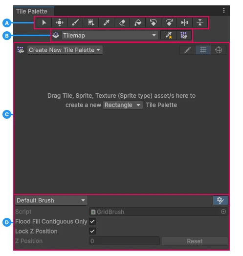

Explore the properties and settings you use to paint tiles onto a tilemap. For more information, refer to Paint tiles into the scene.

Use the tools in the toolbar to select a tile in the tile palette, then paint, move, and edit tiles in the Scene view.
Note: If you enable Tile Palette Edit, the tools select, move, and edit the tiles inside the tile palette instead of the tiles in the Scene view.
| Tool | Icon | Description | Keyboard shortcut |
|---|---|---|---|
| Select | Selects a tile in the main area or the Scene view. Click and drag to select multiple tiles. The Grid Selection Inspector window displays the properties of the tile. | S | |
| Move | Moves a tile in the Scene view. Select a tile with the Select tool first, select Move, then click and drag the tile. | M | |
| Paint | Paints tiles. Select the tool, select a tile on the tile palette, then paint into the Scene view. Click and drag to select multiple tiles in the tile palette. | B | |
| Box Fill | Paints rectangular groups of tiles. Select the tool, click and drag to select an area of tiles in the tile palette, then click and drag to paint in the Scene view. | U | |
| Pick | Picks a tile from the tile palette or the Scene view, then switches to the Paint tool. Click and drag to select multiple tiles. | I | |
| Eraser | Removes tiles from the Scene view. To erase a large area, select the tool, then click and drag in the tile palette to select the size of the eraser. | D | |
| Flood Fill | In the Scene view, fills a blank area or an area of identical tiles with the selected tile. You can’t use this tool with more than one tile. | G | |
| Rotate Counter-Clockwise | Rotates the current Paint tool tile 90° counterclockwise. | [ | |
| Rotate Clockwise | Rotates the current Paint tool tile 90° clockwise. | ] | |
| Flip X | Flips the current Paint tool tile along the x-axis. | Shift+[ | |
| Flip Y | Flips the current Paint tool tile along the y-axis. | Shift+] |
| Property | Sub-property | Icon | Description |
|---|---|---|---|
| Active Tilemap | N/A | Sets the tilemap you want to paint tiles onto. When you open the dropdown, the active tilemap has a checkmark (✓) next to its name. | |
| N/A | Hide Tilemap | Hides the tilemap in the Scene view. | |
| N/A | Ping Tilemap | Highlights the tilemap in the Hierarchy window. | |
| N/A | Create New Tilemap | N/A | Creates a new tilemap. The options are:
|
| Brush Picks Overlay | N/A | Displays the Brush Picks overlay in the Scene view. For more information, refer to Save and reuse a tile selection with Brush Picks. | |
| Tile Palette Overlay | N/A | Displays the Tile Palette Clipboard overlay in the Scene view, which is a compact version of the Tile Palette window. |
| Property | Icon | Description |
|---|---|---|
| Active Tile Palette | Sets the tile palette to display and use. When you open the dropdown, the active tile palette has a checkmark (✓) next to its name. | |
| Create New Tile Palette | N/A | Creates a new tile palette. |
| Tile Palette Edit | Enables editing the tile palette instead of the Scene view. When you enable this property, the tools in the toolbar select, move, and edit the tiles in the main area of the Tile Palette window. | |
| Grid | Displays the tile grid in the main area. | |
| Gizmos | Enables gizmos in the main area. If you enable Tile Palette Edit and select a tile using the Select tool, Unity displays gizmos for moving, rotating, scaling, and transforming tiles. |
| Property | Description |
|---|---|
| Name | Sets the name of the tile palette. |
| Grid | Sets the layout of the cells. The options are:
|
| Hexagon Type | Sets the type of a hexagonal grid. This option is available only if you set Grid to Hexagon. The options are:
|
| Cell Size | Sets the size of the cells in the tile palette. The options are:
|
| Sort Mode | Sets the method Unity uses to calculate the depth of tiles for sorting. This property has transparency in its name because Unity renders 2D objects during the transparent render pass. For more information, refer to Sort sprites. The options are:
|
| Sort Axis | Sets the x-axis, y-axis, and z-axis of the sorting axis if you set Sort Mode to Custom Axis. For example, a vertical axis (0, 1, 0) means higher GameObjects are further away, which is useful for top-down games. |
Use the Brush Inspector window to determine the behavior of the Paint tool.
The following table lists the properties of the Default Brush. For the properties of other brushes, refer to the 2D Tilemap Extras package documentation.
| Property | Description |
|---|---|
| Brush | Sets the behavior of the Paint tool. The options are:
|
| Toggle visibility | Hides the Brush Inspector window. To display the window again, click the horizontal control at the bottom of the Tile Palette window and drag up. |
| Script | The script that defines the behavior of the brush. To create a custom brush, refer to Create a custom brush that runs a script. |
| Flood Fill Contiguous Only | Sets the Flood Fill tool to fill only tiles connected to the tile you click. If you disable this property, the Flood Fill tool fills all tiles of the same type across the tilemap. |
| Lock Z Position | Locks all the tiles you paint to the z position of the tile you select. |
| Scene View Z Position | Paints the tiles at this z position. This property is available only if you disable Lock Z Position. Select Reset to reset the z-position value back to zero. |
| Palette Z Position | Paints any tiles from the tile palette at this z position. This property is available only if you disable Lock Z Position. Select Reset to reset the z-position value back to zero. |
| Key | Description |
|---|---|
| − | Increases the z value of the tile. This property is available only if you disable Lock Z Position. |
| = | Decreases the z value of the tile. This property is available only if you disable Lock Z Position. |
| Shift+B | Selects the next brush in the Brush dropdown. |
| Shift+Alt+B | Selects the previous brush in the Brush dropdown. |